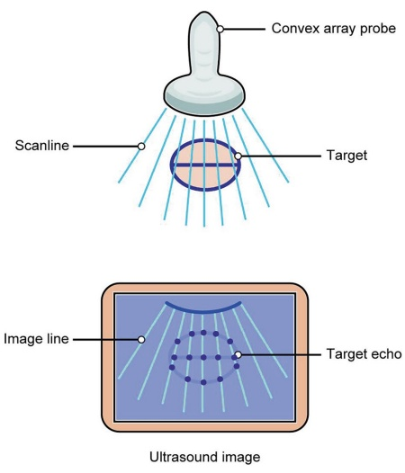
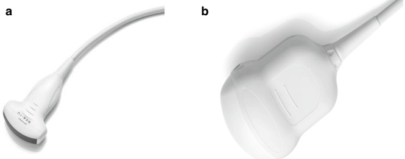
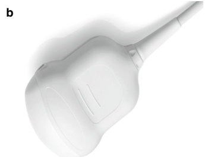
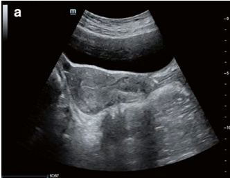
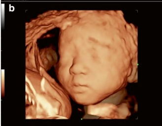
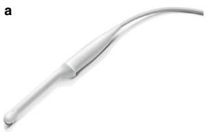
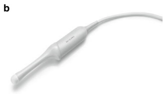
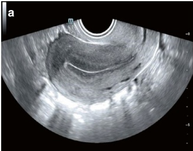
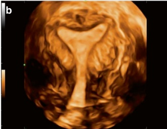
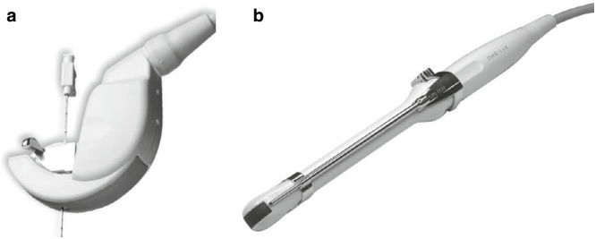

2.1.2 超声探头
超声探头，又称超声换能器，是任何超声诊断系统最关键的组成部分。 探头的基本工作原理如下：换能器中的核心元件——压电晶片，通过逆压电效应将交流电转换为短超声脉冲。 这些脉冲在体内传播，遇到组织界面后会像回声一样反射。
当声波深入组织时，每个反射界面都会产生回声，这些回声依次返回到探头上。然后，换能器利用正压电效应处理这些返回的回声，将其转换为电信号。 这些信号最终被处理并显示为监视器上的超声图像（图 2.1）。该过程能够顺序捕获从浅层到深层结构的回声，从而实现内部解剖结构的可视化。
超声探头必须同时具备声学和功能特性。根据超声检查的部位和临床实践的具体目的，选择合适的探头。因此，了解常用超声探头的特点和应用至关重要。
以下是生殖医学科常用的超声探头类型概述。

2.1.2 Ultrasonic Probe
The ultrasonic probe, also known as the ultrasound transducer, is the most critical component of any ultrasound diagnostic system. The basic principle of probe operation is as follows: the core element of the transducer, a piezoelectric wafer, converts alternating current into short ultrasonic pulses through the inverse piezoelectric effect. These pulses propagate through the body, where they encounter tissue interfaces and are reflected as echoes.
As the sound waves travel deeper into the tissue, each reflective interface generates echoes that sequentially return to the probe. The transducer then processes these returning echoes using the positive piezoelectric effect, converting them into electrical signals. These signals are ultimately processed and displayed as ultrasound images on the monitor (Fig. 2.1). This process enables the sequential capture of echoes from superficial layers to deeper structures, allowing for the visualization of internal anatomy.
An ultrasonic probe must exhibit both acoustic and functional characteristics. The appropriate probe is selected depending on the scanning site and the specific purpose of the examination in clinical practice. Therefore, it is essential to understand the features and applications of commonly used ultrasonic probes.
The following is an overview of the types of ultrasonic probes frequently utilized in the Department of Reproductive Medicine.


1. 经腹超声探头
大多数经腹超声探头（或换能器）的工作频率在 3.5 至 6.0 MHz 之间。它们可分为两大类：二维（2D）探头和立体成像探头（图 2.2）。 体积探头配备了内部电子芯片，可实现自动扫描。在扫描过程中，体积探头保持静止，其声束会自动调整方向，以捕获感兴趣区域内的完整体积数据。 经过计算机重建后，收集到的三维（3D）数据生成扫描区域的三维图像。
腹部探头的关键特征包括与身体接触的表面积小、近场视野窄、远场视野宽、成像范围可达 $ 90^{\circ} $，以及扇形成像模式（图 2.3）。 这些探头主要用于经腹超声检查以及妇产科（O&G）评估。在生殖医学科，经腹超声探头主要用于超声引导的胚胎移植术。
2. 腔内超声探头
腔内超声探头（或换能器）的工作频率范围为 2 至 11 MHz，可分为二维（2D）和体积探头两种类型（图 2.4）。腔内探头的关键特征包括与身体接触的表面积小、近场视野窄、远场视野宽、成像范围可达 $ 230^{\circ} $，以及扇形成像轮廓（图 2.5）。
这些探头设计用于腔内扫描，可经阴道或经直肠进行。在生殖医学中，腔内探头常用于常规子宫和附件评估、卵泡监测及其他诊断目的。
3. 干预超声探头
介入超声探头可分为专用穿刺探头和带有穿刺导向架的介入探头。A
1. Abdominal ultrasonic probes
Most abdominal ultrasonic probes (or transducers) operate at frequencies between 3.5 and 6.0 MHz. They can be classified into two main types: two-dimensional (2D) probes and volume probes (Fig. 2.2). Volume probes are equipped with an internal electronic chip that enables automatic sweeping. During scanning, a volume probe remains stationary while its acoustic beams automatically adjust their direction to capture comprehensive volume data within the area of interest. After computerized reconstruction, the collected three-dimensional (3D) data generates a 3D image of the scanned region.
The key characteristics of abdominal probes include a small contact surface with the body, a narrow near-field view, a wide far-field view, an extended imaging range of up to $ 90^{\circ} $, and a fan-shaped imaging pattern (Fig. 2.3). These probes are primarily employed for abdominal ultrasound examinations and obstetric and gynecological (O&G) assessments. In the Department of Reproductive Medicine, abdominal ultrasonic probes are predominantly utilized for ultrasound-guided embryo implantation procedures.
2. Intracavitary ultrasonic probes
Intracavitary ultrasonic probes (or transducers) operate at frequencies ranging from 2 to 11 MHz and are available in two types: two-dimensional (2D) and volume probes (Fig. 2.4). Key characteristics of intracavitary probes include a small contact surface with the body, a narrow near-field view, a wide far-field view, an extended imaging range of up to $ 230^{\circ} $, and a fan-shaped imaging profile (Fig. 2.5).
These probes are designed for intracavitary scanning, either transvaginally or transrectally. In reproductive medicine, intracavitary probes are commonly employed for routine uterine and adnexal assessments, follicle monitoring, and other diagnostic purposes.
3. Interventional ultrasonic probes
Interventional ultrasonic probes can be classified into specialized puncture probes and interventional probes equipped with a puncture guide rack. A







特殊穿刺探头可能由空心圆形单晶换能器或多阵列换能器（多个排列成阵列的晶体）组成，通常具有楔形槽（图 2.6a）。 或者，可以将穿刺导向架安装到探头的左侧（或右侧），用作引导装置（图 2.6b）。该支架标记了穿刺针进入组织时的轨迹，并在屏幕上显示，以帮助精确定位。
介入超声的主要临床应用包括超声引导穿刺活检、抽吸和消融治疗。在生殖医学中，介入超声探头主要用于超声引导的卵子取出和胎儿减小术。
specialized puncture probe may consist of either a hollow circular single-crystal transducer or a multiarray transducer (multiple crystals arranged in arrays), often featuring a wedge-shaped groove (Fig. 2.6a). Alternatively, a puncture guide rack may be attached to the probe's left (or right) side, serving as a guiding device (Fig. 2.6b). This rack marks the trajectory of the puncture needle as it enters the tissue, which is displayed on the screen to assist with accurate positioning.
The main clinical applications of interventional ultrasound include ultrasound-guided puncture biopsy, aspiration, and ablation therapy. In reproductive medicine, interventional ultrasonic probes are primarily used for ultrasound-guided egg retrieval and fetal reduction procedures.